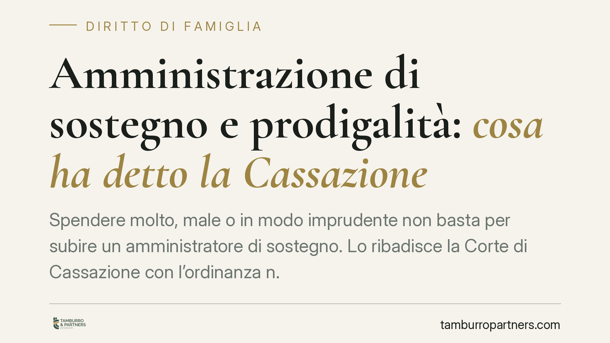

Amministrazione di sostegno e prodigalità: cosa ha detto la Cassazione
Spendere molto, male o in modo imprudente non basta per subire un amministratore di sostegno. Lo ribadisce la Corte di Cassazione con l'ordinanza n. 5763/2026: senza una reale fragilità psichica, la persona capace di intendere e volere resta libera di disporre del proprio patrimonio, anche in modo poco avveduto. Una pronuncia che riporta al centro l'autodeterminazione.

Il caso
Una professionista, commercialista, veniva sottoposta a un'istanza di amministrazione di sostegno sul presupposto della sua presunta *prodigalità*, cioè la tendenza a spendere il proprio denaro in modo sconsiderato. Il giudice tutelare e i successivi gradi di giudizio si sono interrogati su un punto decisivo: spendere molto, anche male, basta a limitare la capacità di una persona?
La Corte di Cassazione, con l'ordinanza n. 5763 depositata di recente, ha risposto in modo netto. La sola prodigalità, in assenza di una reale infermità o fragilità psichica, non giustifica l'attivazione della misura.
Inquadramento normativo
L'amministrazione di sostegno è disciplinata dalla Legge 6/2004, che ha introdotto gli articoli 404 e seguenti del Codice civile. La misura è destinata alla persona che, *per effetto di una infermità ovvero di una menomazione fisica o psichica, si trova nella impossibilità, anche parziale o temporanea, di provvedere ai propri interessi* (art. 404 c.c.).
Il presupposto, quindi, è duplice: deve esistere una condizione di infermità o menomazione e questa deve tradursi in una concreta difficoltà a curare i propri interessi. Mancando il primo elemento, viene meno la stessa ragione della tutela.
La Cassazione ricorda che l'amministrazione di sostegno è uno strumento di protezione, non di controllo. Non può diventare una forma di tutela paternalistica imposta a chi semplicemente compie scelte economiche che altri giudicano imprudenti. La libertà di disporre del proprio patrimonio - anche sbagliando - rientra nel diritto di autodeterminazione della persona capace.
Perché la prodigalità da sola non basta
Il punto di equilibrio è questo: la prodigalità può essere rilevante solo se è *sintomo* di una patologia o di una fragilità psichica sottostante. In altre parole, spendere in modo compulsivo può essere la manifestazione di un disturbo; ma la spesa in sé, isolatamente considerata, non dice nulla sulla capacità della persona.
Nel caso esaminato, la beneficiaria era pienamente capace di intendere e di volere. Non emergeva alcuna infermità in grado di comprometterne il discernimento. Di conseguenza, la Corte ha escluso i presupposti per la misura: non si può limitare la capacità di agire di un soggetto lucido solo perché le sue scelte economiche appaiono avventate a terzi.
Implicazioni pratiche
La pronuncia ha ricadute concrete per più soggetti.
Per chi teme un ricorso a proprio carico, ad esempio da parte di familiari preoccupati per le spese, il principio è una garanzia: la misura non può essere usata per sindacare lo stile di vita o le decisioni patrimoniali di una persona capace.
Per chi, al contrario, intende attivare la tutela nei confronti di un congiunto, la decisione impone rigore probatorio. Non basta documentare spese elevate o scelte dissennate: occorre dimostrare una condizione di fragilità psichica o fisica che renda la persona incapace di provvedere ai propri interessi.
Per gli operatori - giudici tutelari in primis - si conferma la necessità di una valutazione individualizzata, centrata sulla persona e non sul patrimonio.
Cosa fare in concreto
- Verificate i presupposti reali: prima di proporre un'istanza di amministrazione di sostegno, accertate l'esistenza di una condizione medica documentabile, non la sola imprudenza economica.
- Raccogliete documentazione clinica: una valutazione medico-specialistica è spesso decisiva per provare la fragilità psichica richiesta dalla legge.
- Distinguete tutela e controllo: se l'obiettivo è solo limitare le spese di un familiare lucido, la strada dell'amministrazione di sostegno non è percorribile.
- Se siete destinatari di un ricorso, fatevi assistere per dimostrare la piena capacità di intendere e volere e contestare l'assenza dei presupposti di legge.
- Valutate strumenti alternativi: per chi desidera organizzare in anticipo la gestione del proprio patrimonio esistono istituti volontari (mandati, procure, pianificazione successoria) da esaminare caso per caso.
La decisione conferma un principio di civiltà giuridica: la protezione non può trasformarsi in una limitazione della libertà di chi è pienamente capace di decidere per sé.
---
*Contributo informativo a cura di Tamburro & Partners - Avv. Giuseppe Tamburro. Non costituisce parere legale.*
Ogni famiglia ha il suo equilibrio.
Separazione, divorzio, affidamento, assegno: se vuoi un confronto riservato su una specifica situazione, scrivi allo studio. Ti rispondiamo entro un giorno lavorativo.